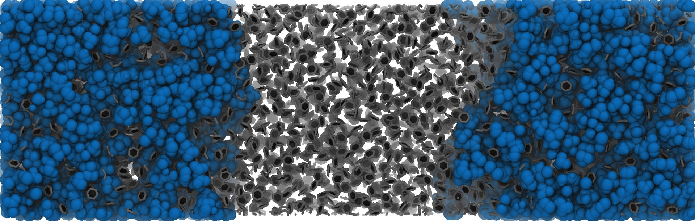

Pytim: Quick Tour¶
Pytim is a package based on MDAnalysis for the identification and analysis of surface molecules in configuration files or in trajectories from molecular dynamics simulations.
Although MDAnalysis is needed to perform the interfacial analysis, you can also use Pytim on top of MDTraj or directly online from a simulation performed using OpenMM.
Basic Example¶
This is a basic example that shows how easy is to use the ITIM class
for planar interfaces:
import MDAnalysis as mda
import pytim
from pytim.datafiles import *
# load an example configuration file
u = mda.Universe(WATER_GRO)
# initialize the interface, this has to be called only once
# before iterating over the trajectory!
interface = pytim.ITIM(u)
# write a pdb with the information on the surface layers
interface.writepdb('layers.pdb',centered='middle')
# access the atoms in the layers as an MDAnalysis' AtomGroups
upper_layer = interface.layers[0,0]
The above lines are doing the following:
Import the modules of MDAnalysis, pytim, and some example datafiles, then initialize the MDAnalysis universe in the usual way, using as an input file one of the structures provided by the package, in this case a water/vapor interface in a gromos file format (the variable
WATER_GROis made available by thedatafilesmodule).The interfacial analysis is then initialized using the
ITIMclass, and the molecular layers are calculated automatically.The whole configuration is saved to a pdb file for graphical inspection using
writepdb()(with surface atoms having a beta factor equal to the numer of the layer they belong to).The groups of atoms corresponding to different layers can be extracted using the
layers()method.
The result of the calculation can be seen in the following picture, where surface oxygen atoms are highlighted in blue.

This is a very basic example, and more are given below and in the documentation of the modules.
Non-planar interfaces¶
GITIM¶
One of the possibilities is to use GITIM to identify surface atoms in a conceptually similar way to ITIM.
We make here the example of multiple solvation layers around glucose:
import MDAnalysis as mda
import pytim
from pytim.datafiles import GLUCOSE_PDB
u = mda.Universe(GLUCOSE_PDB)
solvent = u.select_atoms('name OW')
glc = u.atoms - solvent.residues.atoms
# alpha is the probe-sphere radius
inter = pytim.GITIM(u, group=solvent, max_layers=3, alpha=2)
for i in [0,1,2]:
print ("Layer "+str(i),repr(inter.layers[i]))
Layer 0 <AtomGroup with 54 atoms>
Layer 1 <AtomGroup with 117 atoms>
Layer 2 <AtomGroup with 216 atoms>

SASA¶
The Solvent-Accessible-Surface-Area method of Lee and Richards has been extensively used to compute the exposed surface of proteins to calculate solvation and electrostatic effects. However, the method can be also used to produce the list of surface-exposed atoms. In this sense, it is a very similar to GITIM. In the present implementation, the identification of surface atoms scales quasi-linear with the number of atoms.
The above example for GITIM can be rewritten using SASA with very similar results:
import MDAnalysis as mda
import pytim
from pytim.datafiles import GLUCOSE_PDB
u = mda.Universe(GLUCOSE_PDB)
solvent = u.select_atoms('name OW')
glc = u.atoms - solvent.residues.atoms
# alpha is the probe-sphere radius
inter = pytim.SASA(u, group=solvent, max_layers=3, alpha=2)
for i in [0,1,2]:
print ("Layer "+str(i),repr(inter.layers[i]))
Layer 0 <AtomGroup with 42 atoms>
Layer 1 <AtomGroup with 102 atoms>
Layer 2 <AtomGroup with 189 atoms>
Willard-Chandler¶
If one is not directly interested in interfacial atoms, but in the location of the instantaneous, continuous surface, it is possible to use
the method of Willard and Chandler.
Options for the output are the wavefront obj, cube and vtk formats, the last two being able to carry also the information about the atomic positions, besides the surface. The formats can be read by Paraview.
import MDAnalysis as mda
import pytim
from pytim.datafiles import MICELLE_PDB
import nglview
u = mda.Universe(MICELLE_PDB)
g = u.select_atoms('resname DPC')
# In the WillardChandler module, `alpha` is the Gaussian width of the kernel
# and `mesh` is the grid size where the continuum surface is sampled
interface = pytim.WillardChandler(u, group=g, mesh=1.5, alpha=3.0)
# particles are written using the option `group`
interface.writecube('data.cube', group = g )

Molecular vs Atomic¶
By default methods like ITIM or
GITIM use the molecular=True option,
meaning that whenever an atom is identified as interfacial, all
other atoms in the same residue will be tagged as interfacial. This
is usually the appropriate option for small molecular liquids,
especially if successive layers are going to be analyzed. Taking
the example of water, if all atoms are passed to, say,
ITIM, and molecular=False, the first
layer will be composed only of oxygen atoms (the hydrogen atoms
being located within the radius of oxygen). As a consequence, the
second layer would be composed mostly of hydrogen atoms, and so on.
For larger molecules like in the case of lipids, instead, it is
more informative to look at the location of different atoms along
the surface normal, therefore the molecular=False option
is advisable. Otherwise, as in the case of a small micelle, all
atoms in the lipids would be tagged as interfacial.
import MDAnalysis as mda
import pytim
from pytim.datafiles import MICELLE_PDB
u = mda.Universe(MICELLE_PDB)
g = u.select_atoms('resname DPC')
# pass the `molecular=False` option to identify surface atoms instead of molecules
inter = pytim.GITIM(u,group=g, molecular=False)

|

|

|

|
Left: layers of interfacial water and micelle (section cut)
using |
|
Filtering vapour molecules¶
Pytim offers the option to identify the relevant phases before proceeding to the surface identification. This is a necessary step, for example, if the vapour phase of a water/vapour interface is not empty, or if a two-components system has non-negligible miscibilities.
In order to filter out molecules in the vapour (or in the opposite) phase, pytim relies on different clustering schemes, where the system is partitioned in a set of atoms belonging to the largest cluster, the remaining atoms belonging to the smaller clusters. The available criteria for building the clusters are
A simple cutoff criterion based on the connectivity
A local density based clustering criterion (DBSCAN)
- In order to use the simple cutoff criterion, it is enough to pass the cluster cutoff to the
import MDAnalysis as mda
import pytim
from pytim.datafiles import WATER_550K_GRO
u = mda.Universe(WATER_550K_GRO)
# 3.5 Angstrom is the approx location of the oxygen g(r) minimum
inter = pytim.ITIM(u,cluster_cut=3.5)
At high temperatures, as in this case, using the cluster_cut option solves the problem with the molecules in the vapour phase

|

|
Left: Interfacial molecules identified using
|
|
In some cases, the density of the vapour (or opposite) phase is so high, that using any reasonable cutoff, the molecules are percolating the simulation box. In this case, it is advisable to switch to a density based cluster approach. Pytim uses the DBSCAN algorithm, with, in addition, an automated procedure to determine which density should be used to discriminate between liquid and vapour (or high-concentration/low-concentration) regions. An example is a binary mixture of ionic liquids and benzene, which have, respectively, a low and high mutual miscibility.
import MDAnalysis as mda
import pytim
from pytim.datafiles import ILBENZENE_GRO
u = mda.Universe(ILBENZENE_GRO)
# LIG is benzene
g = u.select_atoms('resname LIG')
# 1. To switch from the simple clustering scheme to DBSCAN, set the `cluster_threshold_density`
# 2. To estimate correctly the local density, use a larger cutoff than that of the simple clustering
# 3. With `cluster_threshold_density='auto'`, the threshold density is estimated by pytim
inter = pytim.ITIM(u,group=g,cluster_cut=10.,cluster_threshold_density='auto',alpha=1.5)
|  | 
|
Left: the ionic-liquid / benzene mixture, all molecule shown,
including the ionic liquid (spheres) and benzene (sticks)
Right: benzene phases/interface determined using DBSCAN
(options |
|
{kind=link}